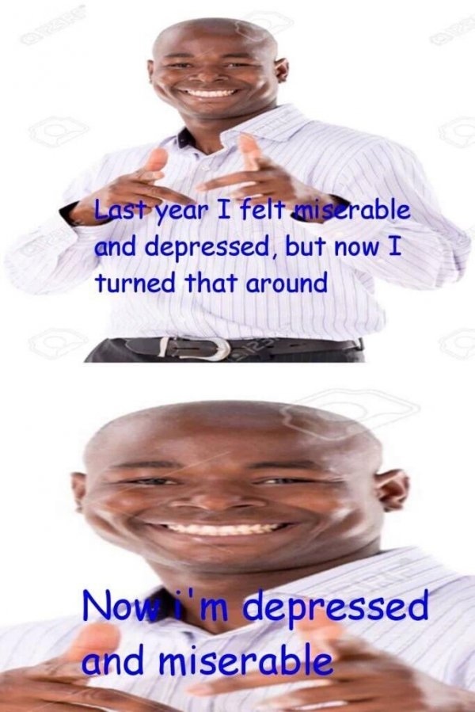
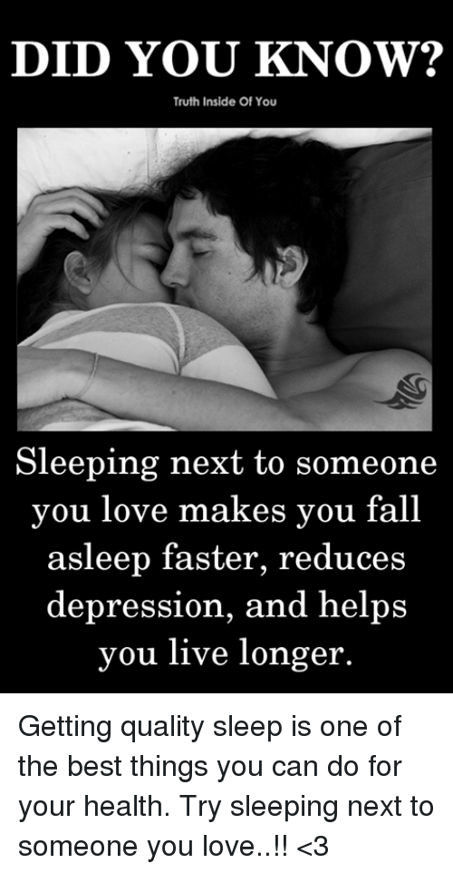
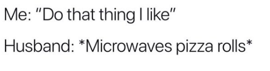
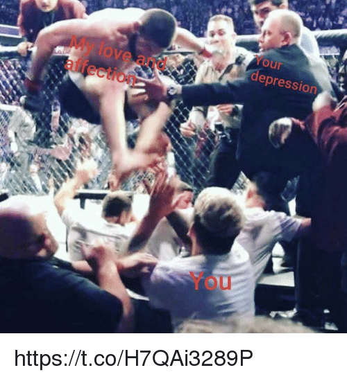
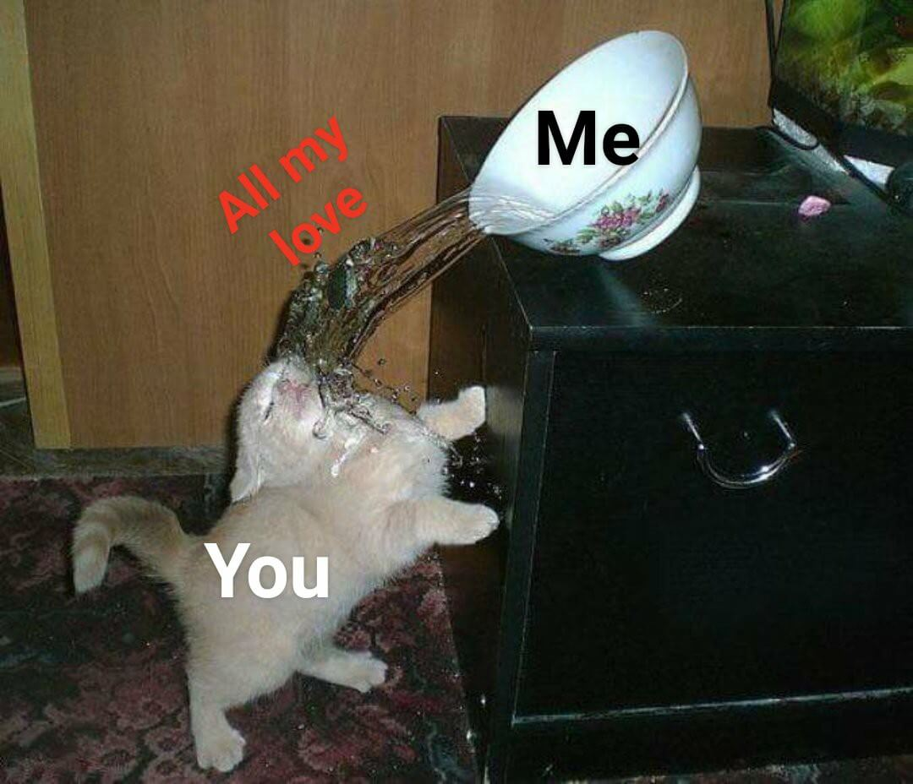
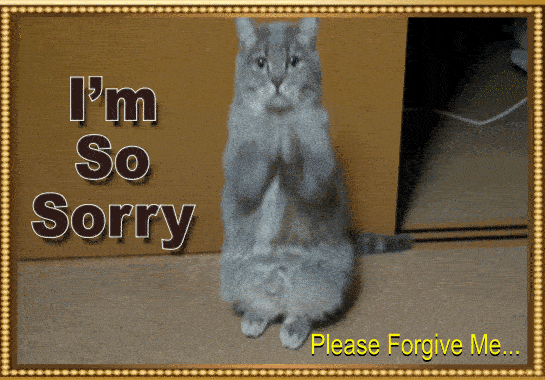
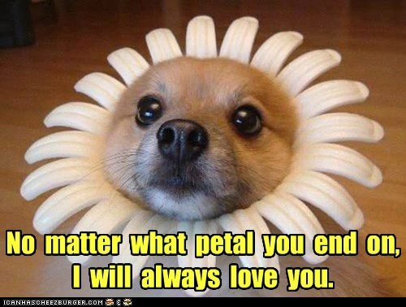
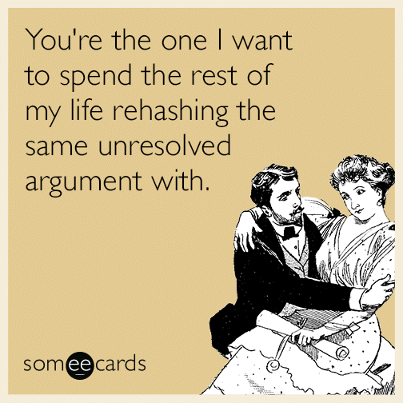

Hi Farhana, I'm a constant pain in the ass I know, and I also know that you think about me sometimes. I know you are looking that quick end. But, Here's why you should give me a chance
I know you are numb
And don't feel anything
And nobody gets you
You take whole squad with you
Most of your days go like this

But, There IS HOPE! I'm not the expert but I will my best to help you anyway I can. Even if it means, doing something like this
And support you
And doing things that doesn't make sense
I know what you are thinking, I'm a fool and asking for things I can't handle, and you be like

And be saying like

I know, but we'll battle your depression together. You don't know until you try WITH ME
I know most of the times I'll be terrible at trying, but I won't give up

Having me with you can also help you! and it's scientifically proven

And doing crazy and stupid things to help you

Becuase at the end of the it's my love against

Suicide is an irreversible and drastic decision. Even if it seems like the only way to make suffering stop, it is not true. baby, your beliefs and experience are highly changeable. Remember of all the times you made a bad decision that you regretted afterwards, because you were misinformed or had an inaccurate view of the situation at the time. If you make a mistake, you can usually learn from it and get better. But not with suicide.
You can't change your mind. And there is absolutely no way you can be 100% sure it is the right decision. Suicide makes everyone around you suffer. Even if you feel like nobody in the world cares about you, that is wrong. Suicide solves nothing for anyone and just adds a bit to the overall misery and pain of every person who knows you. Think about how uncle and aunty will feel rest of their lives. What if they stopped living as well? What if they can't bear the thoughts you gone. You death only make them suffer and end their lives as well. I know don't want that.
I know it'd be a constant battle but for supremacy. It'd be the battle for balance and normalcy, to cast away the demons of the past and present to ensure a better future. To me, you are stil the same person I fell in love with. The same person who I want to spend my life with. I won't always be perfect, I will learn along the way. I know for a fact that you need someone to battle your depression with.
At the end of the day you have to ask yourself are you willing to take me in? Maybe there's nothing i can do to make it better. But, I can at least keep them from getting worse. I can't solve your depression but I can emotionally support you. I can't understand what you're going through but I love you and I'll here if you need someone to talk to.
Older marriage proposal
Ans: Maybe
Old audio
Hi Farhana, I'm the guy who cranks up your volume and makes you mad most of the time
But you know, who's awesome? It's you and more importantly
But you know, despite all my flaws and shortcomings, One thing I can never stop, that is to stop loving you. It's like THE next to normal/natural thing for me. Words cannot describe my feeling, So here's a more appropriate photo that perfectly sums up -

You know whenever I see your photo(s), I go like

In case, you didn't know

My kinda ideal day would be

And I know, I've hurt you alot

The ONLY thing that I look forward to right now, is the day be with you and I wanna spend rest of my life with you
I believe, we will make a great team and because whenever each of us get mad, we end up being -

Well, after all these crazy months, I have something to ask you


And


Here's why you should marry me -



In case, you say no